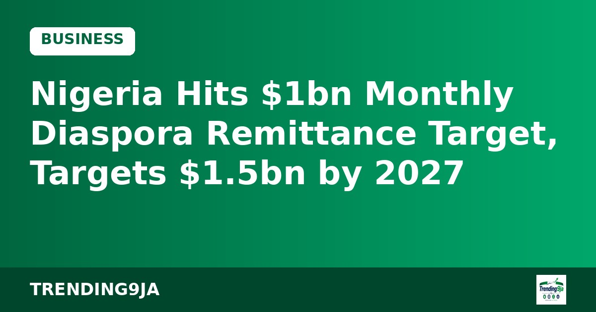
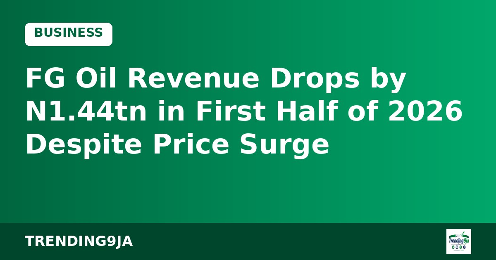

Listed Nigerian Manufacturers Spend N842bn On Energy In Nine Months
Eleven listed manufacturing companies in Nigeria spent N841.99bn on energy in the first nine months of 2026, up 7.4 per cent from 2025, Punch reports.

Nigeria has successfully reached its goal of securing one billion dollars in monthly diaspora funds, Central Bank Governor Olayemi Cardoso has revealed.
Channels TV reported that the head of the apex bank disclosed this milestone on Friday while addressing guests at the 61st Annual Bankers’ Dinner organized by the Chartered Institute of Bankers of Nigeria in Lagos. Following the achievement, Cardoso stated that the regulator is now aiming to push monthly inflows up to 1.5 billion dollars before the end of the first half of 2027.
The governor commended licensed International Money Transfer Operators for their commitment to boosting transparency, investing in modern infrastructure, and expanding formal transaction routes, particularly across Asia. He pointed out that these advancements have enhanced convenience and restored dignity for Nigerians making payments outside the country.
Reviewing the broader financial landscape, Cardoso said the naira gained approximately six per cent within the preceding twelve months. He added that trading activity in the foreign exchange market occasionally crossed one billion dollars daily, while transactions in the fixed income sector averaged 1.5 trillion naira per day.
Addressing ongoing currency fluctuations, Cardoso noted that price swings are normal in any market-driven environment reacting to international economic conditions and shifts in United States interest rates. He maintained that Nigeria is far more resilient against external shocks than it was three years ago, stressing that the central bank stands ready to deploy its external reserves whenever needed to stabilize disorderly market trends.
Sources: Channels TV
← More Business storiesEleven listed manufacturing companies in Nigeria spent N841.99bn on energy in the first nine months of 2026, up 7.4 per cent from 2025, Punch reports.

Nigerian Enamelware Plc has reported a reduced half-year deficit of N40.66m following higher six-month revenues and lower production costs, according to Punch.

Nigeria's gross oil revenue fell by N1.44tn in H1 2026 despite higher global oil prices, according to a report by the Budget Office cited by Punch.
Nigeria's trending news, politics and entertainment, straight to your email.
By subscribing you agree to our Privacy Policy. Unsubscribe any time.